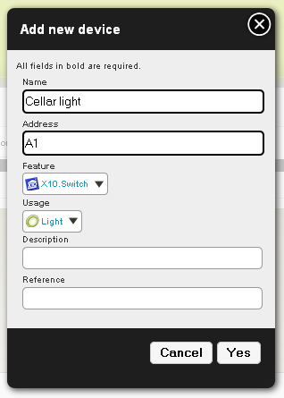
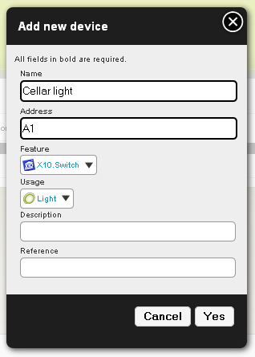

X10 plugin¶
Purpose¶
X10 is an automation technology which allows to switch and dim lights, control appliances, etc. This plugin allows to control X10 devices if you got a CM11 / CM12 adaptator. If you want to use another adaptator, check if there are available plugins for these adaptators.
Note
at this day (august 2010), creating a plugin for CM15 is planned, so CM15 support is only a question of time.
How to plug¶


On the left the CM12DK module which is used to send commands to all x10 plugged in modules. On the right a LM12 module used to control a lamp.
Heyu¶
This plugin uses Heyu as an external tool to use CM11 adaptator. As said on Heyu’s homepage, Heyu is a text-based console program for remotely controlling lights and appliances at home or office. So, you will first need to install Heyu.
Prepare¶
Create or edit /etc/udev/rules.d/10-local.rules, and add:
KERNEL=="ttyUSB*",DRIVERS=="pl2303",SYMLINK+="cm11",MODE="0666"
MODE sets the rights on the device. In this case everybody is allowed to send a command to it. By default only root can do it. As you probably won’t start Domogik as root...
Then, plug in your CM11 device. You should have a /dev/cm11 link created:
$ ls -l /dev/cm11
lrwxrwxrwx 1 root root 7 2010-07-19 09:50 /dev/cm11 -> ttyUSB3
Note that “ttyUSB3” may change on your installation.
Installation¶
Get the last sources (eventually adapt the following line) and uncompress them:
$ wget http://www.heyu.org/download/heyu-2.9.3.tar.gz
$ tar xzf heyu-2.9.3.tar.gz
$ cd heyu-2.9.3/
Lauch sources compilation:
$ ./Configure
$ make
Launch installation with root user (or as sudo):
$ make install
- Choose “3. In directory /etc/heyu (for system-wide access)”
- Answer “/dev/cm11” to the question “To which port is the CM11 attached ?”
Checking installation¶
Get heyu information¶
Launch this command:
$ heyu info
You should obtain something like:
Heyu version 2.8.0
Configuration at /etc/heyu/x10.conf
Powerline interface on /dev/cm11
Firmware revision Level = 8
Interface battery usage = Unknown
Raw interface clock: Mon, Day 199, 08:58:50
(--> Civil Time: Mon 19 Jul 2010 09:58:50 CEST)
No schedule has been uploaded by Heyu.
Housecode = A
0 = off, 1 = on, unit 16.......8...4..1
Last addressed device = 0x0000 (0000000000000000)
Status of monitored devices = 0x0000 (0000000000000000)
Status of dimmed devices = 0x0000 (0000000000000000)
Try using an appliance¶
Plug in an appliance device (using A1 code for example) and run:
$ heyu on A1
The appliance should switch on. Now run:
$ heyu off A1
The appliance should switch off.
Try using a lamp¶
Plug in a lamp device (using A2 code for example) and run:
$ heyu on A2
The lamp should switch on. Now, run (one or more times):
$ heyu dim A2 10
This command lowers brightness of 10 units each time you call it. So, your lamp intensity should decrease. Now, run:
$ heyu bright A2 10
This command increases brightness of 10 units each time you call it. So, your lamp intensity should increase.
Finally, run:
$ heyu off A2
$ heyu stop
Plugin configuration¶
Enabling plugin¶
You can enable plugin by using (from your domogik directory):
$ dmgenplug x10_heyu
You just have to reload administration page to see the plugin in the list.
Configuration¶
In the administration panel, go to x10_heyu configuration page.
heyu-cfg-path¶
Path to Heyu config file Default : /etc/heyu/x10.conf The default value (/etc/heyu/x10.cfg) should be fine. When set don’t forget to save it!
Start the plugin¶
You can now start the plugin (start button).
Creating x10 devices¶
Creating a lamp device¶
In the administration panel, go to Organization > Devices page. Create a new device like this :
- Name : Short name, like “Hall”
- Description : Device details, like “Hall light”
- Address : X10 address, like “A4”
- Reference : X10 module’s model, only for information, like “LM12”
- Type : * X10.switch (provides only on/off) * X10.dimmer (provides on/off and dim/bright)
- Usage : Light
Example :
 

Attribute the features to a place and you can now control your lamp.
Creating an appliance device¶
In administration, go to Organization > Devices page. Create a new device like this :
- Name : Short name, like “Coffee machine”
- Description : Describe your coffee machine if you want!
- Address : X10 address, like “A3”
- Reference : X10 module’s model, only for information, like “AM12”
- Type : X10.switch
- Usage : Appliance
Attribute the features to a place and you can now control your appliance.
Developper Notes¶
/command¶
/command/x10/<address>/on # switch on the lamp / appliance
/command/x10/<address>/off # switch off the lamp / appliance
Only for lamps
/command/x10/<address>/dim/<value> # dim units by <level> (1-22) (decrease brightness)
/command/x10/<address>/bright/<value> # brighten units by <level> (1-22) (increase brightness)
Note that these values are relative.